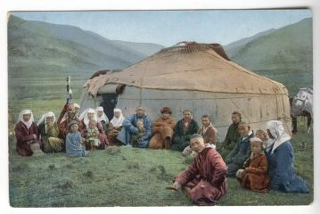

Is "Surplus Land" Really Surplus?

Project Overview
This project examines the large-scale survey of the Kazakh steppe conducted by the Russian Empire, likely the first and perhaps the last investigation of this scale in the region. The survey had a clear political purpose: to demonstrate that the Kazakh steppe contained a large amount of "surplus land" and could therefore accommodate large numbers of Russian settlers.
Using this survey as its main historical basis, this project reconsiders whether surplus land truly existed at the time. It asks two central questions. First, did Russian imperial officials and Kazakh communities understand "surplus land" in different ways? Second, was so-called surplus land land that could not be used, or land that people chose not to use? This project focuses on the capacity to benefit from land and argues that Kazakh communities were often unable to use the land under colonial conditions, rather than simply unwilling to do so.
Why It Matters
This project contributes to colonial historiography by highlighting the conflict between agricultural expansion and pastoral systems. It shows how Russian colonial authorities often failed to understand nomadic land use, leading to the misclassification of land as "surplus" and enabling land appropriation. More broadly, it uses digital humanities methods to reconstruct a broader picture of Kazakh pastoral regions around 1910.